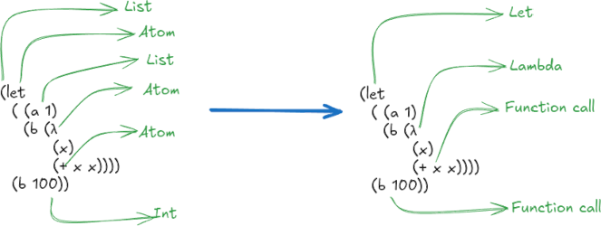

- Part 1 - Introduction
- Part 2 - Type Systems
- Part 3 - Introduction to the Code
-
Part 4 - Code Walk-Through
- Parser
- Resolver
-
Type Checker
- Type Check: If Expression
- Type Check: Do Expression
- Type Check: Lists
- Type Checking: Progress So Far
- Generating Fresh Type Variables
- Occurs Check - Preventing Infinite Types
- The Substitution Map
- Binding Type Variables - Updating the Substitution Map
- Finding Free Type Variables
- Instantiating Polymorphic Types
- Type Checking: Another Progress Check
- Generalise
- Unification
- üß© Type Check: Define Expression
- üß© Type Check: Function Call
- üß© Type Check: Let Expression
- üß© Type Check: Lambda Expression
- üß© Type Check: Atom Expression
- Limitations & Future Work
- Type Checking: Summary
- Lowering
- Evaluating
- REPL
- Conclusion
Part 1 - Introduction
In this post, you’ll learn how to build a lightweight Hindley–Milner type checker in Haskell. No advanced theory is required. We’ll apply it to a tiny, LISP-inspired language so you can focus on how inference works.
Hindley-Milner inference may seem intimidating, but I believe that it is much more approachable than it first appears. Each concept is quite understandable. It is just a matter of working through them and building up to the full picture.
Hopefully, you’ll find this post useful if you want to implement a type system of your own, or if you wish to understand how Hindley-Milner works.
Structure of this Document
This document is structured as follows:
- Part 1: Introduction and overview.
- Part 2: Hindley-Milner type system introduction.
- Part 3: Introduction to the code.
- Part 4: Code walk-through.
- Conclusion.
The code is available on GitHub.
Conventions
- üìù is used to introduce a new term or concept.
- üí° introduces a tip or reminder.
- üß© starts a block that goes into more detail about a specific topic.
Scope
The explanation and code focus on a practical introduction to the Hindley-Milner type system. This is not meant to be production grade, no consideration given to performance or optimisations for real-world languages.
This post is about implementing a Hindley-Milner type system in Haskell, not about LISP itself. Many of the features that make LISP interesting are not implemented or discussed in this context. It is just the S-Expression syntax being used.
I believe that it’s often easier to start with a lightweight practical approach, and then decide whether you want to dive into the theory. I hope that this post will give you enough of a practical understanding of Hindley-Milner type systems that you can then go on to learn more about the theory if you want to.
It should demonstrate that implementing the basics for a small DSL is entirely possible, and not as hard as it may seem at first glance.
Why LISP?
I’m using a LISP-like language because it is a small language. Using a small subset of LISP means that we can focus on the type system, rather than language itself.
To keep the language minimal, I’m not implementing many of the features of LISP. There are no macros, quoting etc.
Despite this simplicity it is still enough to demonstrate how the type system works. It could also be a starting point for a more complete language if you want to extend it.
If you are interested in seeing a fully-fledged statically typed LISP, take a look at Typed Racket.
For the remainder of this post, I will refer to the language being implemented as “LISP”.
Quick Lisp Primer
LISP has a uniform, minimal syntax:
- Code and data are written as parenthesised lists.
- Prefix notation is used:
(func arg1 arg2 ...). - Functions are first-class values.
(+ 10 12)results in22.(prn "Hello, World!")- same as
print("Hello, World!")in Python - or
putStrLn "Hello, World!"in Haskell
- same as
There are many good resources to learn LISP, so I won’t go into more detail here.
⚠️ You do not need to learn LISP to understand this post. The basic concepts of LISP are simple and can be grasped quickly from the context of the code examples.
Part 2 - Type Systems
If you are reading this, you are probably already familiar with types and why you might want them, so I won’t cover that here. Instead, we’ll dive straight into how Hindley–Milner inference works.
In short, for the LISP being implemented, we want to ensure that user code is well-typed.
(+ 10 12)is well-typed.(+ 10 "Hello")is not.
> (+ 10 "Hello")
Type Error: Unification mismatch
expected: Int, but found: String.
1: (+ 10 "Hello")
^
|
+----------You may find that switching between the theory (Part 2) and the code (Part 4) helps you understand the concepts better.
Hindley-Milner Type System
From Wikipedia:
A classical type system for the lambda calculus with parametric polymorphism. It deduces types automatically across entire modules, not just local expressions, making it the backbone of ML-style languages. - Wikipedia
The Type Checker
The type checker being discussed here implements the Hindley-Milner type inference algorithm.
What Hindley-Milner Gives You:
- Type inference – no annotations needed (but supported).
- Unification – the workhorse that solves equality between types.
- Let-generalisation – automatic polymorphism from monomorphic type bindings.
- Principal types – you get the most general type, so your functions remain reusable.
Unification
üìù Unification is the algorithm that, given two type expressions,
- Determines whether they can be made equal
- And if so, constructs the most general substitution for type variables that makes the expressions identical.
For example, calling increment on an integer:
- Suppose
incis a function with typeInt -> Int. - When you write
(inc 1):- The type checker sees that
incexpects an argument of typeInt. - It sees that
1is of typeInt. - It tries to unify the argument type of
inc(Int) with the type of1(Int). - Since both are
Int, the unification succeeds, and the expression type checks.
- The type checker sees that
Calling increment on a string:
- If you try
(inc "hello")- The checker sees that
incexpectsInt. - It sees
"hello"is aString. - Unification of
IntwithStringfails. - A type error is reported.
- The checker sees that
üìù A type variable is a placeholder that stands for any type. E.g. a or U0.
üìù A substitution map tracks which type variables should be replaced by other types or variables, enabling recursive resolution to the final, most specific type during type inference.
- The substitution map maps a type variable name (like
U0,U1) to another type variable or concrete type. - This can be type variable to type e.g. 
U0 -> Int, or one type variable to another, e.g. U1 -> U0.
During unification, the algorithm uses the substitution map to replace type variables with their mapped types.
(recursively resolving chains like U1 -> U0 -> Int).
- Lookup
U1=>U0 - Lookup
U0=>Int - Result:
Int
⚠️ The code will prevent infinite types by checking that a type variable never appears within the structure it’s being unified with. See Infinite Types for more details.
üß© Longer unification Example
(concat3 () () (list 1))- Assume
concat3isconcat3 :: [a] -> [a] -> [a] -> [a]. - That is, it takes three lists of the same type and returns a concatenated list of that type.
(list 1):listcreates a list, so this function creates a list containing the integer1- In this LISP implementation, lists are homogeneous, meaning all elements must be of the same type.
(concat3
() ; arg1
() ; arg2
(list 1) ; arg3
)Type checking:
- arg1:
() :: [U1] -
The first
()is inferred as an empty list with element typeU1i.e. type[U1], whereU1is a fresh type variable.
- arg1:
- arg2:
() :: [U2] -
The second
()is also inferred as an empty list of type[U2], whereU2is a another fresh type variable.
- arg2:
- arg3:
(list 1) :: [Int] -
arg3: The third argument
(list 1)is type-checked and inferred as a list ofInt, i.e. [Int].
- arg3:
üí° A fresh type variable is a new unique type variable that has not been used before in the current type environment.
(concat3
() ; :: [U1]
() ; :: [U2]
(list 1) ; :: [Int]
)Unification:
- Homogeneous list
-
All the arguments must be of the same type, so we need to unify
U1,U2, andInt.
- Unify
U1 ~ U2 -
This gives us
U1 = U2because the types match structurally (They are both fresh type variables and can unify with any type).
- Unify
U1 ~ Int-
Next unify
U1withInt, yieldingU1 = Int. -
Because
U2was already equated toU1, it too becomesInt.
- Unify with the function type
-
concat3has type[a] -> [a] -> [a] -> [a]. -
Unify each argument’s inferred type (
[U1],[U2],[Int]) with[a], which after substitution becomes[Int]for all three. -
In other words, solve
[a] ~ [U1], [a] ~ [U2], [a] ~ [Int] -
After applying our substitutions (
U1 = Int,U2 = Int) -
the signature specializes to
[Int] -> [Int] -> [Int] -> [Int]. - Everything matches
(concat3 ; :: [Int] -> [Int] -> [Int] -> [Int]
() ; :: [Int]
() ; :: [Int]
(list 1) ; :: [Int]
) ; :: [Int]✅ And so the unification and type checking succeeds, resulting in the final type of the expression being [Int].
Generalisation
üìù Generalisation in Hindley-Milner, is the process of turning a monomorphic type into a polymorphic type (forall type) by quantifying its free type variables when binding a value with let.
üìù The principal type is sometimes informally called the final inferred type, but technically it refers to the most general type from which all others can be derived by substitution.
Generalisation is the key to Hindley-Milner’s polymorphism. The type system can determine when a type can be made polymorphic.
If you write a function like (λ (x) x)
- In the unification step, the type checker will infer this to have the type
U0 -> U0, whereU0is a fresh type variable. - Generalisation will then turn this into a polymorphic type
∀ U0. U0 -> U0, meaning it can work with any type. - The
forallquantifier∀ U0indicates thatU0can be any type, making the function polymorphic.
Even though the example is trivial, this mechanism underlies powerful polymorphism in real-world languages like ML and Haskell.
In our checker, we generalise at let-bindings and top-level defines.
üí° Generalisation picks the type variables in the inferred type that are not already ‚Äúin scope‚Äù in the environment
Or in Haskell terms: getFreeTypeVars inferedType `Set.difference` getFreeTypeVarsFromEnvironment
Instantiation
üìù Instantiation Replaces all quantified variables in a polymorphic type with fresh type variables.
- That is it replaces type variables in a polymorphic type (one with a
forallquantifier) with fresh type variables. - For example
∀ a b. a -> b -> Stringwould be instantiated toU0 -> U1 -> String, whereU0andU1are fresh type variables. - This ensures that each use of a polymorphic value remains independent in type inference
- We cannot assume that one type of variable is the same as another simply because they share a name in different contexts.
Instantiation ensures that each type variable is unique so that there is no accidental type sharing.
üìù We instantiate every polymorphic type at every variable use. For example, when you refer to a top‐level identity function or a let‐bound polymorphic value.
üß© Longer Generalisation Example
(let ((identity (λ (z) z)))
(let ( (x
(identity 10))
(y
(identity "Hello"))
)
(prn y)
)
)Without generalisation, a single monomorphic binding of identity would lock its type to the first use. This would make the second call fail.
Here is a look at how generalisation solves this problem.
- We have a nested
letexpression. - The outer
letbinds anidentityfunction. - The inner
letbinds two variablesxandy, both using theidentityfunction.
Using what we know from the previous section, we can infer the types step by step.
(let ((identity (λ (z) z))) ; identity :: U0 -> U0
(let ( (x
(identity 10)) ; 10 :: Int, identity :: Int -> Int
(y
(identity "Hello")) ; "Hello" :: String, ...
)
(prn y)
)
)- ❌ While unifying
xthe type checker sees thatidentitymust beInt -> Intbecause10is anInt. - ❌ When checking
(identity "Hello"), unification attemptsInt ~ Stringand fails.
That is not going to work. This is exactly what generalisation is for.
Instead:
(let ((identity (λ (z) z))) ; identity :: ∀ U0. U0 -> U0
(let ( (x
(identity 10)) ; 10 :: Int, identity :: Int -> Int
(y
(identity "Hello")) ; "Hello" :: String, identity :: String -> String
)
(prn y)
)
)- ✅ The type checker generalises
identityto∀ U0. U0 -> U0. - ✅ Now
identitycan be used with any type, so it can be applied to both10and"Hello"without issue.
Infinite Types
üìù Infinite types are types that are defined in terms of themselves, leading to recursive type definitions that cannot be resolved.
The Hindley–Milner type checker detects infinite types, using the occurs check and rejects them. Without an occurs check, you could write nonsensical types that make no sense (lead to infinite recursion).
For example:
(let ((x (list x)))
x)- Infer: In
(list x), ifx :: U0, thenlist x :: [U0]. - Unify: Attempt to solve
U0 = [U0]. - Detect: Because
U0occurs within[U0], unification would recurse indefinitely.
Summary
So far you have seen what to expect from a Hindley-Milner type system, and you’ve been introduced to
- Unification.
- The substitution map.
- Generalisation.
- Instantiation.
- Infinite types and the occurs check.
Part 3 - Introduction to the Code
With an introduction to the theory handled, let’s look at the code to implement the type system in Haskell.
Implementation Overview
As a reminder, here is what this LISP implementation handles:
- Data types:
Int,Bool,String,nil, and lists of these types. - A small set of special forms:
lambda,let,define,if,function application. - A small set of primitive functions like
+,-,*,and,or, etc. - A tiny standard library.
letfor defining local variables.definefor defining global variables and functions.
Compiler High Level Flow
The LISP implementation is quite shallow as discussed, but I’ve also tried to keep it relatively broad. It could have been only a parser, the type checker and a REPL. This would miss some interesting parts of actually implementing a type system, so I’ve implemented a few more real-world aspects of the pipeline.
Instead, it looks like this:
- Parsing: LispParser.hs
- Converts source code into a simple Abstract Syntax Tree (AST).
- No special form recognition. Just simple s-expressions
- Resolver: Resolver.hs
- Recognizes special forms
- Create a more structured AST.
- Type Checking: TypeChecker.hs
- Implements the Hindley-Milner type inference algorithm.
- Handles unification, generalisation, and instantiation.
- Type checks the resolved AST.
- Produces a typed AST with type annotations.
- Lowering: Eval/Lower.hs
- Converts the typed AST into a lower-level representation.
- In this implementation, its effectively just type erasure
- Evaluation: Eval/Evaluator.hs
- Evaluates the lowered AST.
- Implements a simple interpreter for the LISP language.
Finally, a REPL (Repl.hs) that ties everything together, allowing you to interactively enter LISP code and see the results.
In Part 4 I’ll walk through each of these components in more detail, explaining how they work and fit together.
Code Conventions
- I’ve tried to keep the Haskell relatively simple, but what counts as simple is very subjective.
- I have a preference for qualified imports, so you’ll see many
import xxx as qualified yyystatements. - I am using a custom prelude (
Verset) which I prefer because it also encourages qualified imports (not surprisingly, as I created it). Switching toprotoludeor even the standard prelude should be easy enough. - I’ve used GHC 12.2 but it should work with 9.8 and later.
- I’ve tried to add a reasonable amount of code comments. Hopefully you’ll be able to follow the code without too much trouble.
pass=pure ()- Record fields are made strict using
!. - I’m using overloaded-record-dot syntax, so you can use
x.fieldinstead offield xfor record field access. - Rather than using multiple
'(prime) suffixes, I’ll use1,2, etc. Soname1 => name2 => name3instead ofname => name' => name''.
Monad-Transformers
⚠️If you are not familiar with monad transformers, do not let this discourage or distract you.
The type-checker runs in StateT TcState (Except TypeError).
Think of it as mutable state and early exit in a pure setting. Everything inside is just modify' for state and throwE for errors.
You can safely ignore the plumbing and focus on the core logic.
You could remove the monad transformer entirely, e.g.
- Run entirely in IO, use a TVar for state and throwing actual exceptions for errors.
- Then the type signature would look something like IO (TypeEnv, TypedLispVal).
Part 4 - Code Walk-Through
Parser
The code for the parser is in LispParser.hs.
data ParsedLispVal
= PlNil !Pos
| PlAtom !Pos Text
| PlInt !Pos Int
| PlString !Pos Text
| PlBool !Pos Bool
| PlList !Pos [ParsedLispVal]
deriving (Show, Eq)The parser is intentionally minimal. It only generates low-level s-expressions. No form recognition is done here.
For example, the following LISP code:
(if #t 1 2)Would be parsed into the following AST (position elided):
PlList (Pos ...) [
PlAtom (Pos ...) "if",
PlBool (Pos ...) True,
PlInt (Pos ...) 1,
PlInt (Pos ...) 2
]At this stage, there is no difference between special forms, lists, definitions, or function applications. That is all handled in the resolver.
There are tradeoffs here. A simple parser is easy to implement and understand. You might keep the parser simple like this even in a much more complete LISP implementation.
The simpler parser AST may be the homoiconic AST that you’d want the user to see and manipulate (e.g. for macros). But you might alternatively opt to recognise more forms in the parser itself.
Errors
Even a basic language can benefit from readable error messages.
By tagging each ParsedLispVal with a Pos we can track the exact line and column that the node was parsed from.
getSourcePos from megaparsec makes this easy.
atPos :: LispParser Pos
atPos = do
p <- M.getSourcePos
pure $ Pos (M.unPos $ M.sourceLine p) (M.unPos $ M.sourceColumn p)This allows us to report errors nicely since we know the line and column of the node:
Type Error: Unbound variable `z`
1: (let
2: ((x 1)
3: (y z))
^
|
+----------
4: #t)The various error types (for the parser, resolver, type checker and evaluator) all implement the LispError type class.
class LispError a where
showLispError :: a -> (Maybe Pos, Text, Text, Text) -- (position, type, name, error message)This allows us to format errors in a consistent way, regardless of the exact error type.
The formatting of errors is done in Printer/PrintError.hs using the prettyprinter
and prettyprinter-ansi-terminal libraries.
Resolver
The parser produces raw lists, but we want a structured AST to work with. The resolver walks each ParsedLispVal and generates structured ResolvedLispVal nodes.
The code for the resolver is in Resolver.hs.
data ResolvedLispVal
= RlAtom !Pos Text
| RlBool !Pos Bool
| RlDefine !Pos !Text !ResolvedLispVal
| RlDo !Pos ![ResolvedLispVal]
| RlFuncCall !Pos !ResolvedLispVal ![ResolvedLispVal]
| RlIf !Pos !ResolvedLispVal !ResolvedLispVal !ResolvedLispVal
| RlInt !Pos Int
| RlLambda !Pos ![(Pos, Text)] ![ResolvedLispVal]
| RlLet !Pos !L.LetStyle ![((Pos, Text), (Pos, ResolvedLispVal))] ![ResolvedLispVal]
| RlList !Pos [ResolvedLispVal]
| RlNil !Pos
| RlString !Pos Text
deriving (Show, Eq)
- The resolver is responsible for creating a more structured AST from the parsed s-expressions.
- It recognizes special forms, and converts the parsed s-expressions into AST nodes that are easier to work with in the type checker and evaluator.
- E.g. it is much simpler to work with a
RlIfthan just aPlListwith anifatom and three arguments that you would then need to check each time.
The main resolver function is resolveImpl, and it looks like this:
resolveImpl :: Bool -> P.ParsedLispVal -> Either ResolverError ResolvedLispVal
resolveImpl isTopLevel lv =
case lv of
-- No change
P.PlNil p -> Right $ RlNil p
P.PlInt p v -> Right $ RlInt p v
P.PlString p v -> Right $ RlString p v
P.PlBool p v -> Right $ RlBool p v
P.PlAtom p v -> Right $ RlAtom p v
P.PlList p allVs -> do
case allVs of
(h: vs) ->
case h of
P.PlAtom _ "let" -> resolveLet p L.LetParallel vs
P.PlAtom _ "lambda" -> resolveLambda p vs
P.PlAtom _ "λ" -> resolveLambda p vs
P.PlAtom _ "if" -> resolveIf p vs
P.PlAtom _ "define" ->
if isTopLevel
then resolveDefine p vs
else Left . ReResolverError (Just p) $ "define can only be used at top level"
-- (list 1 2 3) => (1 2 3)
P.PlAtom _ "list" -> do
vs' <- traverse (resolveImpl False) vs
Right $ RlList p vs'
P.PlAtom _ "do" -> do
vs' <- traverse (resolveImpl False) vs
Right $ RlDo p vs'
-- Everything else is a function call
_ -> do
f <- resolveImpl False h
args <- traverse (resolveImpl False) vs
Right $ RlFuncCall p f args
[] -> do
-- Empty list is empty list not nil
Right $ RlList p []A few things to note here:
- It recognizes the
let,lambda,if,define, anddo, special forms as well as function application. - The resolver is recursive, it walks the parsed AST and resolves each node recursively.
- We need to track whether we are at the top-level or not, because
definecan only be used at the top-level. - Lambda can be written as
lambdaorλ. - There is no type-checking here.
- Unlike many (most?) LISP implementations we don’t substitute
nilfor empty lists or vice versa.
Let’s look at resolveDefine to see how that works.
resolveDefine :: Pos -> [P.ParsedLispVal] -> Either ResolverError ResolvedLispVal
resolveDefine pos vs' = do
let err = "expected define in form (define name expr)\n"
case vs' of
[name1, val1] -> do
name2 <- as' asAtom "atom" name1 $ Just (err <> "expected atom for name of define")
val2 <- resolveImpl False val1
pure $ RlDefine pos name2 val2
_ ->
Left . ReResolverError (Just pos) $ err <> "Invalid number of arguments for define"
asAtom :: P.ParsedLispVal -> Maybe Text
asAtom (P.PlAtom _ a) = Just a
asAtom _ = Nothing
as' :: (P.ParsedLispVal -> Maybe a) -> Text -> P.ParsedLispVal -> Maybe Text -> Either ResolverError a
as' f n v e' =
case f v of
Just v' -> Right v'
Nothing ->
let e = maybe "" ("\n" <>) e' in
Left $ ReResolverError (Just $ P.getPos v) $ "Expected " <> n <> ", but got " <> P.nameOf v <> eThe resolve functions are all fairly similar. They need to check the s-expression and see if it matches the expected form.
- The various
asXXXfunctions are used to match the expected type of the node. - The
as'function wraps anasXXXcall, and converts a mismatch (Nothing) into an error (ResolverError). - The
asXXXfunctions return anEithertype. Usingas'means that an error will short-circuit the resolution and return an error immediately. P.nameOfis thenameOffunction imported from theLispParsermodule. It gets a human-readable name for the node.letonly supports parallel bindings, so it does not support sequential or recursive bindings.
With every ParsedLispVal now a ResolvedLispVal complete with structure and positions, we’re ready to feed these into our type checker.
Type Checker
The type checker traverses the ResolvedLispVal tree, threading an environment and substitution state through unification, generalisation, and instantiation to produce a fully typed AST.
The code for the type checker is in TypeChecker.hs.
data TypedLispVal
= TvAtom !Pos !L.LispType !Text
| TvBool !Pos !Bool
| TvDefine !Pos !L.PolyType !Text !TypedLispVal
| TvDo !Pos !L.LispType ![TypedLispVal]
| TvFuncCall !Pos !L.LispType !TypedLispVal ![TypedLispVal] -- ^ TvFuncCall pos returnType functionVal argVals
| TvIf !Pos !L.LispType !TypedLispVal !TypedLispVal !TypedLispVal
| TvInt !Pos !Int
| TvLambda !Pos !L.LispType ![(Pos, Text)] ![TypedLispVal]
| TvLet !Pos !L.LispType !L.LetStyle ![(Pos, Text, TypedLispVal)] ![TypedLispVal]
| TvList !Pos !L.LispType ![TypedLispVal]
| TvNil !Pos
| TvString !Pos !Text
deriving (Show, Eq)
data TcState = TcState
{ tsTypeVarCounter :: !Int
, tsSubst :: !(Map Text L.LispType)
}TypedLispValis the type of the AST after type checking. It is very similar toResolvedLispVal, just with type information added.- Primitive types like
Int,Bool,String, andnilare not annotated with their type, since this is obvious from their constructor. -
TvInt {}isTyIntetc.
- Primitive types like
The main type checking function is typeCheckVal' in TypeChecker.hs, which looks like this:
typeCheckVal'
:: TypeEnv
-> R.ResolvedLispVal
-> StateT TcState (Except TypeError) (TypeEnv, TypedLispVal)
typeCheckVal' env1 rv = doIt takes an initial type environment and a ResolvedLispVal, and returns a new type environment and a TypedLispVal on success.
data TypeEnv = TypeEnv
{ teTypes :: !(Map.Map Text L.PolyType)
, teParent :: !(Maybe TypeEnv)
}Here is the top of typeCheckVal'
typeCheckVal'
:: TypeEnv
-> R.ResolvedLispVal
-> StateT TcState (Except TypeError) (TypeEnv, TypedLispVal)
typeCheckVal' env1 rv = do
-- Type check
(envFinal, topT1) <- go
topFinal <- applyValSubstitutions topT1
pure (envFinal, topFinal)
where
go =
case rv of
-- Simple cases, no extra type checking needed
R.RlNil p -> pure (env1, TvNil p)
R.RlInt p v -> pure (env1, TvInt p v)
R.RlString p v -> pure (env1, TvString p v)
R.RlBool p v -> pure (env1, TvBool p v)
-- Type check the more complex cases
R.RlAtom p v -> typeCheckAtom p v
R.RlDefine p name val -> typeCheckDefine p name val
R.RlDo p vs -> typeCheckDo p vs
R.RlFuncCall p f as -> typeCheckFuncCall p f as
R.RlIf p cond then' else' -> typeCheckIf p cond then' else'
R.RlLambda p bindings body -> typeCheckLambda p bindings body
R.RlLet p style bindings body -> typeCheckLet p style bindings body
R.RlList p vs -> typeCheckList p vs- The functions returns a
TypedLispVali.e. the result of type checking theResolvedLispVal. - It also returns the
TypeEnv, which is the type environment after type checking. E.g. it is updated by a(defined ...)form - For the simple cases like
TvIntit simply returns the correspondingTypedLispVal
Now, let us look at how those typeCheckXXX calls are implemented.
Type Check: If Expression
-- (if cond then else)
typeCheckIf pos cond1 then1 else1 = do
-- Type check the `condition`, `then`, and `else` expressions.
(env2, cond2) <- typeCheckVal' env1 cond1
(env3, then2) <- typeCheckVal' env2 then1
(env4, else2) <- typeCheckVal' env3 else1
-- Check that the condition is a boolean.
unify (L.getPos cond2, getValType cond2) (pos, L.TyBool)
-- Unify the types of the then and else branches.
-- I.e. the then and else branches must have the same result type.
unify (L.getPos then2, getValType then2) (L.getPos else2, getValType else2)
-- Get the final type of the body of the if expression.
let finalType = getValType then2
pure (env4, TvIf pos finalType cond2 then2 else2)Looking at that superficially, it is not that complicated.
- Type check the
condition,then, andelseexpressions. - Check (unify) that the condition is a boolean.
- Check (unify) that the types of the
thenandelsebranches are the same. I.e. that the final expression in each has the same type. - Get that final type and make it the type of the
TvIfexpression.
The unify function will be discussed in more detail below.
For now:
üí° Unification is the algorithm that, given two type expressions,
- Determines whether they can be made equal
- And if so, constructs the most general substitution for type variables that makes the expressions identical.
unify
:: (Pos, L.LispType)
-> (Pos, L.LispType)
-> StateT TcState (ExceptT TypeError Identity) ()So for the if expression that was roughly
- Type-check all the child expressions.
- Unify child expressions to ensure the meet expectations
- Get the final type of the expression.
- Construct the
TvIf.
Type Check: Do Expression
-- (do ...)
typeCheckDo pos vs = do
-- Type check all expressions in the do block.
(env2, vs2) <- foldTypeCheckVals env1 vs
-- The type of the block is the type of the last expression or nil if empty.
let lastType = case lastMay vs2 of
Nothing -> L.TyNil
Just x -> getValType x
pure (env2, TvDo pos lastType vs2)TvDo pos lastType vs2
^ ^ ^ ^
| | | +------- typed children
| | +------------- result type of the block
| +-------------------- source position
+------------------------ “do” nodeThis is very similar to the if expression.
- Type check child expressions.
- Get the type of the body (last expression).
- Construct the
TvDo.
Type Check: Lists
-- (list v...)
-- Type check a list of values.
-- In this implementation, lists are always homogeneous (all elements must have the same type).
typeCheckList pos vs =
case vs of
-- An empty list can have any element type. Create a fresh type variable for the element type.
-- Note that nil and the empty list `()` are not synonymous in this system (in most lisps they are).
[] -> do
u <- nextTypeVar
pure (env1, TvList pos (L.TyList $ L.TyVar u) [])
-- Lists at this point are just vectors of values, never function calls.
-- The only requirement is that all elements have the same type.
(h:t) -> do
-- Type check the head element to get its type.
(env2, headVal) <- typeCheckVal' env1 h
-- Type check the tail elements to get their types.
(env3, tailVals) <- foldTypeCheckVals env2 t
let
-- Type and position of the first element.
headType = (L.getPos headVal, getValType headVal)
-- Type and position the tail elements.
tailTypes = tailVals <&> \v -> (L.getPos v, getValType v)
-- Unify the type of each tail element with the head element's type,
-- to ensure all elements in the list have the same type.
forM_ tailTypes $ \tt -> unify headType tt
-- If no type mismatch is found, the list is homogeneous.
pure (env3, TvList pos (L.TyList $ snd headType) (headVal : tailVals))A bit more happening there, but still nothing too complicated.
- Infer before unify.
- Unify takes a
Posand aL.LispType, so it can report errors with the position of any type mismatch.
TvList pos -- the list node
(TyList $ snd headType) -- type of the homogeneous list
(headVal : tailVals) -- the typed list elementsüí° Remember that lists are homogeneous in this implementation.
Non-empty Lists
For non-empty lists, the code looks similar to the if expression’s code.
- Infer the head’s type by checking the first element.
- Infer each tail element’s type with
foldTypeCheckVals. - Unify each tail’s type with the head’s to enforce homogeneity.
- Construct a
TvList pos (TyList headType) [headVal …]node.
Empty Lists
This does mean that when the type checker first sees an empty list it can’t know what the final concrete type will be.
So we say that the empty list can be of any type, i.e. in Haskell we say it has the type [a].
a will be unified later when the list is used.
As noted in the code, the empty list is not the same as nil in this implementation.
Type Checking: Progress So Far
In the examples above, you will have seen at a high level how some of the LISP forms are type-checked. You many want to go back and forth between the code and the theory in Part 2 to get a better feel for what its trying to achieve.
Next we’ll look at some important helper functions before moving on to the core type-checking code.
Generating Fresh Type Variables
üí° A fresh type variable is a new unique type variable that has not been used before in the current type environment.
From the unification section above, we saw that the type checker needs to be able to generate fresh type variables. Let look at the implementation of that in the type checker.
The type checker carries its state in TcState
data TcState = TcState
{ tsTypeVarCounter :: !Int
, tsSubst :: !(Map Text L.LispType)
}tsTypeVarCounteris used to generate fresh type variables.tsSubstis the substitution map.
Generating a fresh type variable is done in the nextTypeVar function, which looks like this:
typeVarPrefix :: Text
typeVarPrefix = "U"
nextTypeVar :: (Monad m) => StateT TcState m Text
nextTypeVar =
state $ \st ->
let c' = tsTypeVarCounter st + 1
name = typeVarPrefix <> show c'
st' = st { tsTypeVarCounter = c' }
in (name, st')It generates a fresh type variable by incrementing the counter and returning a new type variable name.
Since there is only one TcState for the entire type-checking process, this ensures that all generated type variables are unique.
I’m using U as the prefix for type variables. This is entirely arbitrary as the name will always be unique thanks to substitution.
Occurs Check - Preventing Infinite Types
üí° Infinite types are types that are defined in terms of themselves, leading to recursive type definitions that cannot be resolved.
-- | Check if a type variable occurs in a type
-- This is used to prevent infinite types
-- For example, if you this haskell type is infinite: a = [a]
occurs :: Text -> L.LispType -> Bool
occurs name lt =
case lt of
L.TyNil -> False
L.TyInt -> False
L.TyString -> False
L.TyBool -> False
L.TyVar v -> v == name
L.TyList vs -> occurs name vs
L.TyFunc fnArgsType1 fnRetType1 ->
any (occurs name) (fnArgsType1 <> [fnRetType1])- Recursively checks if a type variable already occurs in a type.
- From above, we saw that bindVar calls occur before binding. Then throwing an infinite‐type error if it returns True.
The Substitution Map
üí° A substitution map tracks which type variables should be replaced by other types or variables, enabling recursive resolution to the final, most specific type during type inference.
After the unification section process binds e.g. U1 = Int and U2 = U1, we need to walk every type and replace U2 -> U1 -> Int.
The substitution map is where we store the information to track which type variables have been unified with which types.
The substitution map is stored in the tsSubst of TcState.
The applySubstitutions function and variants are used to apply the substitutions to types and values.
applySubstitutions :: L.LispType -> StateT TcState (Except TypeError) L.LispType
applySubstitutions lt = do
case lt of
L.TyNil -> pure lt
L.TyInt -> pure lt
L.TyString -> pure lt
L.TyBool -> pure lt
L.TyList lt1 -> do
lt2 <- applySubstitutions lt1
pure $ L.TyList lt2
L.TyFunc targs tret -> do
targs2 <- traverse applySubstitutions targs
tret2 <- applySubstitutions tret
pure $ L.TyFunc targs2 tret2
L.TyVar v -> do
st <- get
case Map.lookup v st.tsSubst of
Just lt2 -> applySubstitutions lt2
Nothing -> pure ltNil,Int,String, andBoolhave no substitutions, so they are returned as is.- For lists, functions and other complex types, it recursively applies substitutions to their components and child components.
TyVaris the interesting case- Look up the type variable in the substitution map.
- If it exists:
- apply substitutions to the found type. I.e. recursively apply substitutions to the type.
- This is how we resolved
U2 ~ U1 ~ Intabove.
- If it does not exist in the substitution map, it is returned as is.
- Remember that in the recursive case, this means that all available substitutions have been applied to the type variable.
You can look at the code to see
applyPolyTypeSubstitutions: callsapplySubstitutionson child components ofPolyTypeapplyValSubstitutions: callsapplySubstitutionson child components of aTypedLispVal
Binding Type Variables - Updating the Substitution Map
üí° Binding a type variable means associating a type variable with a specific type, allowing the type checker to resolve that variable to the bound type during type inference.
Unification is both a lookup and a binding operation.
You’ll see bindVar invoked in the unify function’s TyVar cases.
This is where two types unify a variable to a concrete type (or another variable).
-- | Bind a variable to a type
-- This is done during type unification as part of the type inference process.
bindVar :: Pos -> Text -> L.LispType -> StateT TcState (Except TypeError) ()
bindVar pos name lt
-- If trying to bind a type variable to itself, do nothing.
-- E.g. `U1 = U1`
| getTVarName lt == Just name = pure ()
-- Prevent infinite types. See `occurs`
| occurs name lt = lift . throwE $ TcInfiniteType pos name lt
-- Record the substitution
-- i.e. record that `name` is now bound to `lt`
| otherwise = modify' $ \st -> st { tsSubst = Map.insert name lt st.tsSubst }
where
getTVarName :: L.LispType -> Maybe Text
getTVarName (L.TyVar v) = Just v
getTVarName _ = NothingbindVaris used to bind a type variable to a type.- Check if being a variable to itself.
- Check for infinite types using
occurs(see above). - Otherwise, it updates the substitution map in
TcStateusingStateT’smodify'to record that the type variable is now bound to the type.
Finding Free Type Variables
To generalise a type we quantify variables that are not already in scope. Getting free type variables in a type and in the environment is the first step.
In the unification process above, it was said:
Generalisation picks the type variables in the inferred type that are not already “in scope” in the environment
In the code this is done by freeTypeVars and variants.
-- | A free type variable in a type is a type variable that is not bound by a forall in that type,
-- nor already assigned a meaning in the current environment.
freeTypeVars :: L.LispType -> Set Text
freeTypeVars (L.TyVar v) = Set.singleton v
freeTypeVars (L.TyList t) = freeTypeVars t
freeTypeVars (L.TyFunc args ret) = Set.unions $ freeTypeVars ret : (freeTypeVars <$> args)
freeTypeVars L.TyNil = Set.empty
freeTypeVars L.TyInt = Set.empty
freeTypeVars L.TyString = Set.empty
freeTypeVars L.TyBool = Set.empty- This uses
Setfrom thecontainerspackage to track free type variables. - Unsurprisingly, sets make set logic easy.
- Here we use
union :: Set a -> Set a -> Set ato combine two sets - And
unions :: [Set a] -> Set ato combine multiple sets.
Let’s look at the TyFunc case
freeTypeVars (L.TyFunc args ret) = Set.unions (freeTypeVars ret : (freeTypeVars <$> args))
freeTypeVars ret- finds the free variables in the return type.freeTypeVars <$> args- create a list of the free variables from each argument type.freeTypeVars ret: … - prepends the return type’s free variables to the argument types’ free variables, making a list of sets.Set.unions ...- combines all those sets into one set, containing all free variables from the whole function type.
-- | For PtMono, the free variables are just those of the underlying monotype.
-- For PtForall vs t, the free variables are those in t excluding the ones quantified in vs.
freeTypeVarsInPoly :: L.PolyType -> Set Text
freeTypeVarsInPoly (L.PtMono t) = freeTypeVars t
freeTypeVarsInPoly (L.PtForall vs t) = freeTypeVars t `Set.difference` Set.fromList vsThe PtForall case is interesting, as it excludes the type variables that are quantified in the vs list.
- In other words, it finds the free type variables in a polymorphic type, excluding those that are bound by the
forallquantifier.
Finally freeTypeVarsEnv is used to find free type variables in the environment.
-- | traverses the environment hierarchy and accumulates free type variables
freeTypeVarsEnv :: TypeEnv -> Set Text
freeTypeVarsEnv env =
let
freeParents = fromMaybe mempty (freeTypeVarsEnv <$> env.teParent)
freeInThis = freeTypeVarsInPoly <$> (Map.elems env.teTypes)
in
Set.unions (freeParents : freeInThis)To get the free type variables for the whole environment, you:
- Collect all free type variables in the parent environment (if there is one).
- This is done recursively.
- So it will traverse the entire environment hierarchy upwards.
- Note that the fmap here (
<$>) is mapping over theMaybetype, so it gets aMaybe (Set Text)and thefromMaybehandles theNothingcase.
- Collect all free type variables in the current environment.
- Map
freeTypeVarsInPolyover each of the values in the environment’s type map.
- Map
- Take the union of these sets to get all the free type variables in scope.
Note that although Set.unions and recursive environment traversals are fine for small programs, larger codebases might require caching or a more incremental approach.
Instantiating Polymorphic Types
üí° Instantiating a polymorphic type means replacing each quantified variable in a polymorphic type with a fresh type variable.
For example
∀ a b. a -> b -> abecomesU0 -> U1 -> U0- Where
U0andU1are fresh type variables.
This must be done recursively so that all nested polymorphic types are instantiated.
It must also be done recursively for monomorphic types. If we supported more complex types, you could have a monomorphic type that contains polymorphic. (E.g. in Haskell a monomorphic record with a polymorphic field type).
instantiate :: Pos -> L.PolyType -> StateT TcState (Except TypeError) L.LispType
instantiate _pos pt1 = do
case pt1 of
L.PtMono lt1 ->
instantiate' Map.empty lt1
L.PtForall vars1 lt1 -> do
isubsts1 <- for vars1 $ \v -> do
c <- nextTypeVar
pure (v, c)
let isubsts2 = Map.fromList isubsts1
instantiate' isubsts2 lt1
where
instantiate' :: Map Text Text -> L.LispType -> StateT TcState (Except TypeError) L.LispType
instantiate' isubst lt1 = do
case lt1 of
L.TyNil -> pure lt1
L.TyInt -> pure lt1
L.TyString -> pure lt1
L.TyBool -> pure lt1
L.TyList lt2 -> do
lt3 <- instantiate' isubst lt2
pure $ L.TyList lt3
L.TyVar v -> do
case Map.lookup v isubst of
Just v2 -> pure $ L.TyVar v2
Nothing ->
-- No substitution found, so return the original type variable
pure $ L.TyVar v
L.TyFunc targs tret -> do
targs2 <- traverse (instantiate' isubst) targs
tret2 <- instantiate' isubst tret
pure $ L.TyFunc targs2 tret2Type Checking: Another Progress Check
You have now seen all the building blocks required for us to move on to generalisation and unify.
With all the pieces in place, they should be reasonably understandable.
Generalise
üí° Generalisation in Hindley-Milner, is the process of turning a monomorphic into a polymorphic type.
generalise :: TypeEnv -> L.LispType -> L.PolyType
generalise env t =
let
-- 1. Collect all free type variables appearing in the environment.
envVars = freeTypeVarsEnv env
-- 2. Collect all free type variables in the type being generalised.
typeVars = freeTypeVars t
-- 3. Find variables that appear in the type, but not in the environment.
-- These are the variables that can be generalised (quantified over).
toGen = Set.toList (typeVars `Set.difference` envVars)
in
-- 4. If there are no variables to generalise, return a monomorphic type.
if null toGen
then L.PtMono t
else L.PtForall toGen t- The comments in the code explain the steps pretty well.
Paraphrasing from above
- Generalisation picks the type variables in the inferred type that are not already “in scope” in the environment
- (free in type) - (free in type environment)
Unification
üí° Unification is the algorithm that, given two type expressions,
- Determines whether they can be made equal
- And if so, constructs the most general substitution for type variables that makes the expressions identical.
Finally, we get to the unification function, which is the core of the type inference algorithm.
unify
:: (Pos, L.LispType)
-> (Pos, L.LispType)
-> StateT TcState (ExceptT TypeError Identity) ()
unify (lhsPos, lhs1) (rhsPos, rhs1) = do
-- 1) Substitute
lhs2 <- applySubstitutions lhs1
rhs2 <- applySubstitutions rhs1
unify' lhs2 rhs2
where
unify' :: L.LispType -> L.LispType -> StateT TcState (Except TypeError) ()
-- 2) Equal?
unify' l r | l == r = pure ()
-- 3) Type variable?
unify' (L.TyVar name) r = bindVar lhsPos name r
unify' l (L.TyVar name) = bindVar rhsPos name l
-- 4) Lists?
unify' (L.TyList a1) (L.TyList b1) = unify' a1 b1
-- 5) Functions?
unify' (L.TyFunc fnArgsType1 fnRetType1) (L.TyFunc fnArgsType2 fnRetType2) = do
unless (length fnArgsType1 == length fnArgsType2) $ do
lift . throwE $ TcArityError (Just $ lhsPos) (length fnArgsType1) (length fnArgsType2)
-- unify the argument types
zipWithM_ (\a1 a2 -> unify (lhsPos, a1) (rhsPos, a2)) fnArgsType1 fnArgsType2
-- unify the return types
unify (lhsPos, fnRetType1) (rhsPos, fnRetType2)
-- 6) Mismatch
unify' l r = lift . throwE $ TcTypeMismatch "Unification mismatch" lhsPos (L.PtMono l) (Just rhsPos) (L.PtMono r)Main steps
- Apply all substitutions to both types. (see
applySubstitutions) - If they are equal, do nothing
- If one is a type variable, bind it to the other type (unless this creates an infinite type)
- If both are lists, unify their elements
- If both are functions, unify their argument types and return types
- Otherwise, throw a type mismatch error
With all the leg work done, the unification algorithm is concise and straightforward.
We can now look at a couple of the more complex cases from typeCheckVal' to see how they use unification and generalisation.
üß© Type Check: Define Expression
-- (define name val)
typeCheckDefine pos name val1 = do
-- Type check the value being defined.
(_env2, val2) <- typeCheckVal' env1 val1
-- Apply substitutions before generalising. This gets the final (possibly concrete) type of the value.
-- This step resolves all type variables to their current bindings.
tFinal <- applySubstitutions (getValType val2)
-- Generalise the type of the value to create a polymorphic type if possible.
-- See `generalise` for details.
let pt = generalise env1 tFinal
-- Update the *current* environment with the new binding.
-- Note: this does not create a new env layer, it is an in-place update.
let env3 = env1 { teTypes = Map.insert name pt env1.teTypes }
pure (env3, TvDefine pos pt name val2)- The resolver already restricted
defines to the top-level. No need to check again. - Type-check the value being defined.
- Substitute
- Generalise. We generalise for
defineand forletbindings. - In-place environment update with the new binding.
üß© Type Check: Function Call
To type an application like (+ 1 2), we infer the function’s type, infer each argument’s type, and then unify against a fresh type-var return type.
-- (func args...)
-- Type check a function call (application).
-- Note that this is for when a function is called, not when it is defined.
typeCheckFuncCall pos funcVal' args' = do
-- Type check the function being called and all argument expressions.
(_, funcVal) <- typeCheckVal' env1 funcVal'
(_, argVals) <- foldTypeCheckVals env1 args'
-- Collect the types of all the arguments.
let argTypes = getValType <$> argVals
-- Create a fresh type variable for the return type.
retType <- L.TyVar <$> nextTypeVar
-- Unify the type of the function value with a function type: (argTypes -> retType).
-- This means the value being called must be a function taking the argument types and returning the return type.
-- I.e. the value being called is a function whose type unifies with a function type constructed from the argument
-- types and a fresh return type variable.
unify (L.getPos funcVal, getValType funcVal) (pos, L.TyFunc argTypes retType)
-- After unification, apply substitutions to get the final (possibly concrete) return type.
retTypeSubst <- applySubstitutions retType
pure (env1, TvFuncCall pos retTypeSubst funcVal argVals)- This is for function application, not function definition. E.g.
(+ 1 2). - There are no explicit types, so the return type always starts as a fresh type variable.
unifyis called to ensure that the thing being called is a function with the expected argument types and return type.- Don’t forget to apply substitutions to the return type after unification.
üß© Type Check: Let Expression
A let introduces local bindings whose definitions may themselves be polymorphic.
To support polymorphism, we must type‐check each binding, generalise its monotype,
and put all new ones into a fresh environment before checking the body.
-- (let ( (n1 v1) (n2 v2)...) body...)
typeCheckLet pos style bindings1 body1 = do
(bindings2', env2') <-
case style of
-- Parallel let bindings:
-- * All bindings are evaluated in the same outer environment.
-- * No binding can refer to any other binding in the same let.
-- * Only the body sees all new bindings.
--
-- Sequential let bindings, where a binding may refer to a previous binding,
-- are not supported, but should be easy to add.
L.LetParallel -> do
-- Type check each binding in the let form.
ls <- traverse typeCheckLetBinding bindings1
let bindings2 = ls <&> \(_, p, name, val) -> (p, name, val)
-- Generalise the types of the bindings to allow polymorphism.
bindings3 = bindings2 <&> \(_, name, val) -> (name, generalise env1 $ getValType val)
-- Create a new environment layer for the let body, containing the new bindings as local variables.
env2 = TypeEnv
{ teParent = Just env1
, teTypes = Map.fromList bindings3
}
pure (bindings2, env2)- In LISP, there are several styles of
letbindings.- parallel: all bindings are evaluated in the same outer environment.
- sequential: bindings are evaluated one after the other, and can refer to previous bindings.
- recursive: bindings are evaluated in the same environment but can refer to each other.
- This implementation only supports parallel
letbindings, but it should be easy to add the others. - Generalise and create a new environment layer for the body of the
letexpression.
üß© Type Check: Lambda Expression
To type-check (λ (x y) ...), we assign each parameter a fresh type variable, extend the environment with those bindings, type‐check the body, and then assemble a function type from the parameter and return types.
-- (λ (param1 param2 ...) body..)
typeCheckLambda pos params1 body1 = do
-- Create new (fresh) monomorphic type variables for each of the parameters.
params2 <- for params1 $ \(p, name) -> do
u <- nextTypeVar
pure (p, name, L.PtMono $ L.TyVar u)
-- Create a new environment layer for this function.
-- containing the parameter bindings as local variables.
let env2 = TypeEnv
{ teParent = Just env1
, teTypes = Map.fromList $ params2 <&> \(_, name, pt) -> (name, pt)
}
-- Type check the lambda body in the new environment.
(_tenv2, body2) <- foldTypeCheckVals env2 body1
-- Apply substitutions to each parameter type to resolve any type variables.
-- Use `getMonoType` to extract the monomorphic type from a PolyType.
-- This is required here because we only ever bind parameters to monotypes,
-- so it is safe to extract without ambiguity.
params3 <- for params2 $ \(_p, _name, pt) ->
applySubstitutions (getMonoType pt)
-- Get the return type of the lambda by looking at the last expression in the body.
-- Apply substitutions to get the fully resolved type.
retType <- case lastMay body2 of
Nothing -> pure L.TyNil
Just l -> applySubstitutions (getValType l)
-- Construct the final function type for the lambda.
let lambdaType = L.TyFunc params3 retType
pure (env1, TvLambda pos lambdaType params1 body2)- There are no explicit types in the lambda expression, so we create fresh type variables for each parameter and return type.
- A lambda captures its environment, so we create a new environment layer for the lambda body.
- The body is type-checked in this new environment.
- Get the return type and apply substitutions to resolve any type variables.
The way that this implementation handles the type environment naturally supports lexical scoping and variable capture which are the foundations of closures in functional languages.
When type-checking a lambda, we construct a new TypeEnv (env2) that contains just the lambda’s parameters. teParent = Just env1 then links it to the parent scope.
env1 is the environment at the point where the lambda is defined.
That is we return (env1, TvLambda...), not (env2, ...). The new bindings are scoped only within the lambda body, preserving the outer environment unmodified.
This mirrors how most functional languages implement closures.
üìù Lambdas capture the environment where they are defined, not where they are called from.
üß© Type Check: Atom Expression
Atoms are our only form of name lookup. We fetch their polymorphic type from the environment and instantiate them to fresh monotypes for use.
typeCheckAtom pos v = do
-- Try to look up the variable in the type environment.
case tlookup v env1 of
-- If found, instantiate the value (see `instantiate`).
Just pt -> do
lt <- instantiate pos pt
pure (env1, TvAtom pos lt v)
-- If not found, throw an unbound type variable error.
Nothing -> lift . throwE $ TcUnboundVariable pos v
tlookup :: Text -> TypeEnv -> Maybe L.PolyType
tlookup name env =
case Map.lookup name env.teTypes of
Just v -> Just v
Nothing -> case env.teParent of
Nothing -> Nothing
Just parent -> tlookup name parenttlookupis a utility function that looks recursively up a variable in the current type environment or it’s parents etc.- Instantiate if found otherwise throw an unbound variable error.
Limitations & Future Work
Quick Wins
- Type signatures for let and define
- Useful for documentation and guiding inference
- Would require parsing an extra annotation form and a simple unify call in the resolver.
- Sequential let bindings
- Evaluate bindings one by one, each seeing previous ones
- Easy to implement by threading the environment through each binding in order.
-
The
LetTypesum type and case statements are already in place.
- Floating point type support
-
Adds
TyDouble - Could be handled either by overloading or numeric promotion.
Advanced Features
- Recursive let and mutual recursion
- User‐defined algebraic data types
- Type classes and constraints
-
Another way to deal with
doublevsint.
- Performance optimisations
- Current substitution and environment operations are naive
- Large programs would benefit from incremental or cached substitution and more efficient environment lookups.
- Improved error messages
Type Checking: Summary
In just a few hundred lines, we have built a complete Hindley-Milner pipeline in TypeChecker.hs. From parser through evaluator for a minimal Lisp.
We support unification, generalisation, instantiation, polymorphic let bindings, and fresh-variable generation. The code is modular and clear, making it easy to extend.
Lowering
üí° Lowering is the process of transforming a complex AST into a simpler form
Real-world compilers often perform optimisations, desugaring, bytecode generation, etc during lowering. In our pipeline, lowering simply erases all type and position annotations.
Including a lowering phase mirrors a full compiler architecture and sets the stage for REPL features such as runtime type queries.
Since the AST has already passed every type check, removing annotations cannot introduce runtime errors.
In GHC, types are erased before code generation, our lowering step follows the same approach.
With annotations removed, the resulting EvalVar nodes become the input to our interpreter (see the EvalVar type in the Evaluator next section.).
-- | Lower a typed value to 'EvalVar m'.
-- In this implementation, lowering does little other than type erasure.
-- In a more complex implementation, lowering could also perform optimisations or additional transformations.
-- Compling to bytecode or transpiling to another language would typically operate on lowered representation.
lowerToEvalVar' :: T.TypedLispVal -> Except E.EvalError (EvalVar m)
lowerToEvalVar' tv = do
case tv of
T.TvNil _ -> pure EvNil
T.TvInt _ v -> pure $ EvInt v
T.TvBool _ v -> pure $ EvBool v
T.TvString _ v -> pure $ EvString v
T.TvAtom _ _ a -> pure $ EvVar a
T.TvList _ _ vs -> do
case lowerToEvalVar vs of
Left err -> throwE err
Right vs' -> pure $ EvList vs'
T.TvFuncCall _p _t fv' argvs' -> do
fv <- lowerToEvalVar' fv'
argvs <- traverse lowerToEvalVar' argvs'
pure $ EvFuncCall fv argvs
T.TvDo _ _ vs -> do
case lowerToEvalVar vs of
Left err -> throwE err
Right vs' -> pure $ EvDo vs'
T.TvLet _ _ style bindings1 body1 -> do
bindings2 <- for bindings1 $ \(_, n, v) -> do
v2 <- lowerToEvalVar' v
pure (n, v2)
body2 <-
case lowerToEvalVar body1 of
Left err -> throwE err
Right body' -> pure body'
pure $ EvLet style bindings2 body2
T.TvLambda _pos _typ args body1 -> do
body2 <- traverse lowerToEvalVar' body1
pure $ EvLambdaForm (snd <$> args) body2
T.TvIf _pos _typ cond then' else' -> do
cond2 <- lowerToEvalVar' cond
then2 <- lowerToEvalVar' then'
else2 <- lowerToEvalVar' else'
pure $ EvIf cond2 then2 else2
T.TvDefine _pos _typ n v -> do
v2 <- lowerToEvalVar' v
pure $ EvDefine n v2Evaluating
Having erased types, our evaluator walks the EvalVar tree, executing primitives and user-defined functions. We know that the code is well-typed, so we can safely evaluate it without worrying about type errors.
Here is the lowered AST
data EvalVar m
= EvBool !Bool
| EvDefine !Text !(EvalVar m)
| EvDo ![EvalVar m]
| EvFuncCall !(EvalVar m) ![(EvalVar m)]
| EvFunction !(EvFunc m)
| EvIf !(EvalVar m) !(EvalVar m) !(EvalVar m)
| EvInt !Int
| EvLambdaForm ![Text] ![EvalVar m]
| EvLet L.LetStyle ![(Text, EvalVar m)] ![EvalVar m]
| EvList ![EvalVar m]
| EvNil
| EvString !Text
| EvVar !Text
deriving (Eq, Show)
newtype EvFunc m = EvFunc ([EvalVar m] -> EvalEnv m -> ExceptT EvalError m (EvalVar m))This is very similar to TypedLispVal, but without the type information and positions.
Unlike previous types, it is parameterised by a monad m. All the types in the evaluator and the evaluator itself follow this pattern.
The core evaluator remains pure, all IO is delegated to an EvalIO m record. By abstracting over m, we can run in IO or swap in a pure test runner.
data EvalEnv m = EvalEnv
{ eeParent :: !(Maybe (EvalEnv m))
, eeVars :: !(Map Text (EvalVar m))
} deriving (Eq, Show)EvFunc is newtype wrapper for a function type. That is a function that can be applied.
EvalEnv is the environment that the function is evaluated in, it contains the variable bindings and other state needed for evaluation. EvalEnv is hierarchical, i.e. a stack of environments.
Interaction with the external world
The evaluator itself is pure, it has no direct way to perform and side effects.
Instead it uses EvalIO m which provides a way to interact with the external world, assuming m is an IO-like monad.
data EvalIO m = EvalIO
{ eiPrnLn :: !(forall s. (Show s) => s -> m ())
, eiPrnTextLn :: !(Text -> m ())
, eiPrnErrorInCode :: !(forall e. (L.LispError e) => Text -> e -> m ())
, eiLog :: !(Lg.Logger m)
}Of course you could also implement EvalIO without using IO e.g. if you wanted to use it from a pure context.
Primitive Functions
Primitive functions provide built-in operations implemented in Haskell but whose types are checked in our HM engine.
PrimFns.hs contains the primitive function’s implementation. It is very small and incomplete but does demonstrate how the host language can provide functions to the LISP language.
E.g.
newtype PrimitiveFunctions m = PrimitiveFunctions (Map Text (EvFunc m, L.PolyType))
getPrimitiveFunctions
:: forall m.
(Monad m)
=> E.EvalIO m
-> m (E.PrimitiveFunctions m)
getPrimitiveFunctions eio = do
let intIntInt = L.PtMono $ L.TyFunc [L.TyInt, L.TyInt] L.TyInt
pure . E.PrimitiveFunctions . Map.fromList $
[ ("+", (E.EvFunc $ eMathsBin (+), intIntInt))
, ("-", (E.EvFunc $ eMathsBin (-), intIntInt))
, ( "prn"
, ( E.EvFunc ePrn
, L.PtMono $ L.TyFunc [L.TyString] L.TyNil
)
)
]
where
ePrn :: [E.EvalVar m] -> E.EvalEnv m -> ExceptT E.EvalError m (E.EvalVar m)
ePrn args _eenv = do
case args of
[v] -> do
s <- E.as' E.asString "string" $ v
lift . E.eiPrnTextLn eio $ s
pure E.EvNil
_ -> do
throwE . E.EeRuntimeError Nothing $ "prn: wrong number of arguments calling prn: expected 1 argument, got: " <> show (length args)
eMathsBin :: (Int -> Int -> Int) -> [E.EvalVar m] -> E.EvalEnv m -> ExceptT E.EvalError m (E.EvalVar m)
eMathsBin op args _eenv = do
case args of
[v1, v2] -> do
i1 <- E.as' E.asInt "int" $ v1
i2 <- E.as' E.asInt "int" $ v2
pure . E.EvInt $ op i1 i2
_ -> do
throwE . E.EeRuntimeError Nothing $ "Wrong number of arguments calling integer binary function: expected 2 arguments, got: " <> show (length args)getPrimitiveFunctions returns a map of primitive functions and their types.
The types are used during type checking to ensure that the arguments passed to the functions are of the correct type.
The evaluator will get only the EvFunc from the (EvFunc m, L.PolyType) pair for use in evaluation.
Typically you’d want to have as few primitive functions as possible. Then you’d provide a standard library of functions written in the target language.
Standard Library
The REPL loads a small LISP standard library at startup.
; identity function
(define identity (λ (x) x))
; create a list with two elements
(define pair (λ (x y) (list x y)))
; square a number
(define square (λ (x) (* x x)))REPL
The REPL ties together parsing, type checking, lowering, and evaluation into an interactive loop. It is implemented in Repl.hs using the haskline library for line editing, history, and simple completion
The REPL is not the focus of this post, so I won’t go into too much detail here.
Startup
On launch, the REPL:
- Loads
stdLib.lisp(the standard library). - Initializes the parser, type checker, evaluator, and environment with primitives.
- Enters a loop reading user input.
⚠️ In this prototype, stdLib.lisp must reside in the current directory.
REPL Features
Commands
- Expression Evaluation
- Typing any valid Lisp expression parses, type-checks, and evaluates it, printing the result.
:t <expr>-
Show the inferred type of
<expr>after evaluating it.
:ts- List all known top-level names and their types (primitives, library definitions, and user defines).
+t <expr>- Toggle printing of types after evaluation.
-
This is on by default, but can be toggled with
+t.
:quitorCtrl-D- Exit the REPL.
+m- Toggle multi-line mode. End a block with a line containing only ..
Multi-Line Mode
When multi-line mode is on, you can enter a block over several lines:
> +m
Multiline = on.
>>> (let
... ( (x 10)
... (y 20)
... )
... (* x y)
... )
... .
200Known Types with :ts
:ts shows all known types, which is useful for debugging and understanding the types in the program.
> :ts
* (: Int -> Int -> Int)
+ (: Int -> Int -> Int)
- (: Int -> Int -> Int)
/ (: Int -> Int -> Int)
< (: Int -> Int -> Bool)
> (: Int -> Int -> Bool)
and (: Bool -> Bool -> Bool)
eq_bool (: Bool -> Bool -> Bool)
eq_int (: Int -> Int -> Bool)
eq_string (: String -> String -> Bool)
identity (∀ [U0] (: U0 -> U0))
not (: Bool -> Bool)
or (: Bool -> Bool -> Bool)
pair (∀ [U2] (: U2 -> U2 -> (List U2)))
prn (: String -> Nil)
square (: Int -> Int)REPL Example
> (define identity (λ (x) x))
> :t identity
identity : ∀ [U0]. U0 -> U0
> (identity 123)
123
> (identity "hello")
"hello"
> (identity (list 1 2 3))
(1 2 3)
> ((λ (x) (+ x x)) 10)
20Types at Runtime?
Since Lowering erases types from the AST, you might wonder how the REPL is able to show types for :t and :ts.
The answer is that evaluation returns both a value and a type environment.
The REPL retains this and is then able to display type information even after erasure.
m (Either EvalError (T.TypeEnv, T.TypedLispVal, EvalEnv m, EvalVar m))The REPL stores (and updates) this in its state
data REnv = REnv
{ ePrintType :: !Bool
, eEvalEnv :: !(Maybe (E.EvalEnv IO))
, eEio :: !(E.EvalIO IO)
, ePrimFns :: !(E.PrimitiveFunctions IO)
, eTypeEnv :: !(T.TypeEnv) ; <<----------- HERE
, eMultiLine :: !Bool
}This approach separates runtime execution (EvalVar) from type bookkeeping, while still allowing full type introspection in the interactive REPL.
Conclusion
- In this post, we walked through a Hindley–Milner type system implementation in Haskell for a minimal Lisp.
- You saw the core theory of unification, generalisation, instantiation, and principal types.
- You also explored a working code pipeline, from parsing and resolution through type checking, lowering, and evaluation.
- A key takeaway is that HM-style inference need not be daunting to implement.
- Although minimal, this example provides a solid foundation for further extensions.
I hope you’ve found this walk-through both practical and inspiring.
Please feel free to clone the GitHub repo, experiment with the code, and share your improvements or questions.
Further Reading
- The Typed Racket Guide
- Typed Racket
- Robert Nystrom
- Crafting Interpreters
- Wikipedia:
- Hindley–Milner type system
- Pierce, Benjamin C. (2002). Types and Programming Languages. MIT Press.
- Types and Programming Languages
- Milner, R. (1978). A theory of type polymorphism in programming.
- Journal of Computer and System Sciences, 17(3), 348-375.
- Damas, L. & Milner, R. (1982). Principal type-schemes for functional programs.
- Principal type-schemes for functional programs